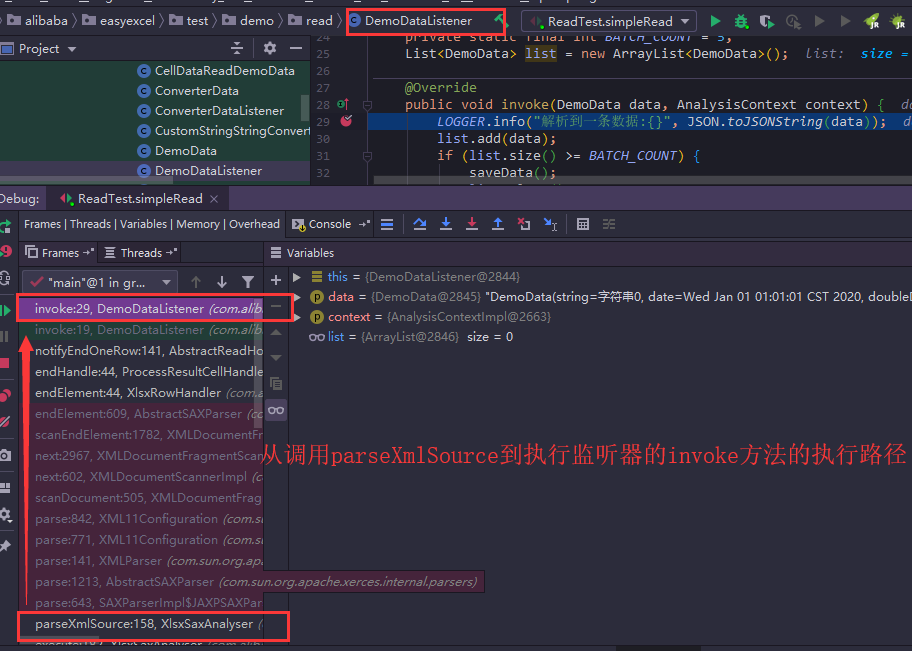
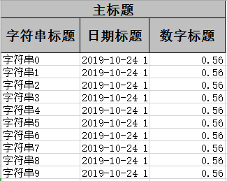
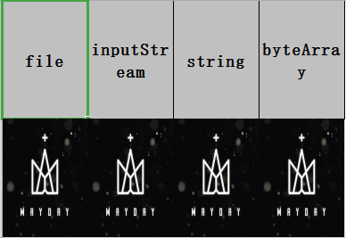
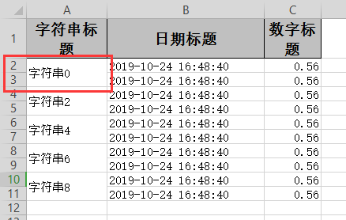

之前我们想到Excel解析一般是使用POI，但POI存在一个严重的问题，就是非常消耗内存。所以阿里人员对它进行了重写从而诞生了easyexcel，它解决了过于消耗内存问题，也对它进行了封装让使用者使用更加便利
接下来我先一一介绍它所有的功能细节、如何使用及部分源码解析
/**
* 最简单的读
* <p>1. 创建excel对应的实体对象 参照{@link DemoData}
* <p>2. 由于默认异步读取excel，所以需要创建excel一行一行的回调监听器，参照{@link DemoDataListener}
* <p>3. 直接读即可
*/
@Test
public void simpleRead() {
String fileName = TestFileUtil.getPath() + "demo" + File.separator + "demo.xlsx";
// 这里 需要指定读用哪个class去读，然后读取第一个sheet 文件流会自动关闭
EasyExcel.read(fileName, DemoData.class, new DemoDataListener()).sheet().doRead();
}fileName是路径+文件名，DemoData是Excel数据对应的实体类，DemoDataListener这看名字就是监听器，用来监听处理读取到的每一条数据XlsxSaxAnalyserXlsxSaxAnalyser，在它的构造方法中做了很多事 public XlsxSaxAnalyser(AnalysisContext analysisContext, InputStream decryptedStream) throws Exception {
...
//从这开始将数据读取成inputStream流，缓存到了sheetMap
XSSFReader xssfReader = new XSSFReader(pkg);
analysisUse1904WindowDate(xssfReader, readWorkbookHolder);
stylesTable = xssfReader.getStylesTable();
sheetList = new ArrayList<ReadSheet>();
sheetMap = new HashMap<Integer, InputStream>();
XSSFReader.SheetIterator ite = (XSSFReader.SheetIterator)xssfReader.getSheetsData();
int index = 0;
if (!ite.hasNext()) {
throw new ExcelAnalysisException("Can not find any sheet!");
}
while (ite.hasNext()) {
InputStream inputStream = ite.next();
sheetList.add(new ReadSheet(index, ite.getSheetName()));
sheetMap.put(index, inputStream);
index++;
}
}doRead方法，不断进入此方法，会看到真正执行的最后方法就是XlsxSaxAnalyser类的execute方法；可以看到如下方法中parseXmlSource解析的就是sheetMap缓存的真正数据 @Override
public void execute(List<ReadSheet> readSheetList, Boolean readAll) {
for (ReadSheet readSheet : sheetList) {
readSheet = SheetUtils.match(readSheet, readSheetList, readAll,
analysisContext.readWorkbookHolder().getGlobalConfiguration());
if (readSheet != null) {
analysisContext.currentSheet(readSheet);
parseXmlSource(sheetMap.get(readSheet.getSheetNo()), new XlsxRowHandler(analysisContext, stylesTable));
// The last sheet is read
analysisContext.readSheetHolder().notifyAfterAllAnalysed(analysisContext);
}
}
}DemoDataListener实现DemoDataListener中有两个实现方法如下，invoke就对应了上述代码中的parseXmlSource而doAfterAllAnalysed对应了上述方法中的notifyAfterAllAnalysed，分别表示了先解析每一条数据和当最后一页读取完毕通知所有监听器 @Override
public void invoke(DemoData data, AnalysisContext context) {
LOGGER.info("解析到一条数据:{}", JSON.toJSONString(data));
list.add(data);
if (list.size() >= BATCH_COUNT) {
saveData();
list.clear();
}
}
@Override
public void doAfterAllAnalysed(AnalysisContext context) {
saveData();
LOGGER.info("所有数据解析完成！");
}parseXmlSource具体实现 private void parseXmlSource(InputStream inputStream, ContentHandler handler) {
InputSource inputSource = new InputSource(inputStream);
try {
SAXParserFactory saxFactory = SAXParserFactory.newInstance();
saxFactory.setFeature("http://apache.org/xml/features/disallow-doctype-decl", true);
saxFactory.setFeature("http://xml.org/sax/features/external-general-entities", false);
saxFactory.setFeature("http://xml.org/sax/features/external-parameter-entities", false);
SAXParser saxParser = saxFactory.newSAXParser();
XMLReader xmlReader = saxParser.getXMLReader();
xmlReader.setContentHandler(handler);
//重点
xmlReader.parse(inputSource);
inputStream.close();
} catch (ExcelAnalysisException e) {
throw e;
} catch (Exception e) {
throw new ExcelAnalysisException(e);
} finally {
if (inputStream != null) {
try {
inputStream.close();
} catch (IOException e) {
throw new ExcelAnalysisException("Can not close 'inputStream'!");
}
}
}
}
notifyAfterAllAnalysed具体实现notifyAfterAllAnalysed的代码，我们实现的DemoDataListener监听器继承AnalysisEventListener，而AnalysisEventListener实现ReadListener接口 @Override
public void notifyAfterAllAnalysed(AnalysisContext analysisContext) {
for (ReadListener readListener : readListenerList) {
readListener.doAfterAllAnalysed(analysisContext);
}
} /**
* 最简单的写
* <p>1. 创建excel对应的实体对象 参照{@link com.alibaba.easyexcel.test.demo.write.DemoData}
* <p>2. 直接写即可
*/
@Test
public void simpleWrite() {
String fileName = TestFileUtil.getPath() + "write" + System.currentTimeMillis() + ".xlsx";
// 这里 需要指定写用哪个class去读，然后写到第一个sheet，名字为模板 然后文件流会自动关闭
// 如果这里想使用03 则 传入excelType参数即可
EasyExcel.write(fileName, DemoData.class).sheet("模板").doWrite(data());
}
private List<DemoData> data() {
List<DemoData> list = new ArrayList<DemoData>();
for (int i = 0; i < 10; i++) {
DemoData data = new DemoData();
data.setString("字符串" + i);
data.setDate(new Date());
data.setDoubleData(0.56);
list.add(data);
}
return list;
}doWritedoWrite才是实际做事的，这次我们从这个入口跟进 public void doWrite(List data) {
if (excelWriter == null) {
throw new ExcelGenerateException("Must use 'EasyExcelFactory.write().sheet()' to call this method");
}
excelWriter.write(data, build());
excelWriter.finish();
}writewrite是核心，继续进入ExcelWriter类，看名字addContent就是添加数据了，由excelBuilderExcel建造者来添加，这是ExcelBuilderImpl类 public ExcelWriter write(List data, WriteSheet writeSheet, WriteTable writeTable) {
excelBuilder.addContent(data, writeSheet, writeTable);
return this;
}addContentExcelWriteAddExecutor写数据执行器，核心就是add方法了 @Override
public void addContent(List data, WriteSheet writeSheet, WriteTable writeTable) {
try {
if (data == null) {
return;
}
context.currentSheet(writeSheet, WriteTypeEnum.ADD);
context.currentTable(writeTable);
if (excelWriteAddExecutor == null) {
excelWriteAddExecutor = new ExcelWriteAddExecutor(context);
}
//核心
excelWriteAddExecutor.add(data);
} catch (RuntimeException e) {
finish();
throw e;
} catch (Throwable e) {
finish();
throw new ExcelGenerateException(e);
}
}addaddOneRowOfDataToExcel插入到Excel表了 public void add(List data) {
if (CollectionUtils.isEmpty(data)) {
return;
}
WriteSheetHolder writeSheetHolder = writeContext.writeSheetHolder();
int newRowIndex = writeSheetHolder.getNewRowIndexAndStartDoWrite();
if (writeSheetHolder.isNew() && !writeSheetHolder.getExcelWriteHeadProperty().hasHead()) {
newRowIndex += writeContext.currentWriteHolder().relativeHeadRowIndex();
}
// BeanMap is out of order,so use fieldList
List<Field> fieldList = new ArrayList<Field>();
for (int relativeRowIndex = 0; relativeRowIndex < data.size(); relativeRowIndex++) {
int n = relativeRowIndex + newRowIndex;
addOneRowOfDataToExcel(data.get(relativeRowIndex), n, relativeRowIndex, fieldList);
}
}addOneRowOfDataToExceladdJavaObjectToExcel方法 private void addOneRowOfDataToExcel(Object oneRowData, int n, int relativeRowIndex, List<Field> fieldList) {
if (oneRowData == null) {
return;
}
WriteHandlerUtils.beforeRowCreate(writeContext, n, relativeRowIndex, Boolean.FALSE);
Row row = WorkBookUtil.createRow(writeContext.writeSheetHolder().getSheet(), n);
WriteHandlerUtils.afterRowCreate(writeContext, row, relativeRowIndex, Boolean.FALSE);
if (oneRowData instanceof List) {
addBasicTypeToExcel((List)oneRowData, row, relativeRowIndex);
} else {
addJavaObjectToExcel(oneRowData, row, relativeRowIndex, fieldList);
}
WriteHandlerUtils.afterRowDispose(writeContext, row, relativeRowIndex, Boolean.FALSE);
}addJavaObjectToExcelExcelWriteAddExecutor执行器类中执行addJavaObjectToExcel，在这里进行了数据的解析，将数据解析成标题和内容，封装成适合Excel的格式CellData，数据类型等，经过这步我们还没看到文件流的生成，那么下一步了 private void addJavaObjectToExcel(Object oneRowData, Row row, int relativeRowIndex, List<Field> fieldList) {
WriteHolder currentWriteHolder = writeContext.currentWriteHolder();
BeanMap beanMap = BeanMap.create(oneRowData);
Set<String> beanMapHandledSet = new HashSet<String>();
int cellIndex = 0;
// If it's a class it needs to be cast by type
if (HeadKindEnum.CLASS.equals(writeContext.currentWriteHolder().excelWriteHeadProperty().getHeadKind())) {
Map<Integer, Head> headMap = writeContext.currentWriteHolder().excelWriteHeadProperty().getHeadMap();
Map<Integer, ExcelContentProperty> contentPropertyMap =
writeContext.currentWriteHolder().excelWriteHeadProperty().getContentPropertyMap();
for (Map.Entry<Integer, ExcelContentProperty> entry : contentPropertyMap.entrySet()) {
cellIndex = entry.getKey();
ExcelContentProperty excelContentProperty = entry.getValue();
String name = excelContentProperty.getField().getName();
if (writeContext.currentWriteHolder().ignore(name, cellIndex)) {
continue;
}
if (!beanMap.containsKey(name)) {
continue;
}
Head head = headMap.get(cellIndex);
WriteHandlerUtils.beforeCellCreate(writeContext, row, head, cellIndex, relativeRowIndex, Boolean.FALSE);
Cell cell = WorkBookUtil.createCell(row, cellIndex);
WriteHandlerUtils.afterCellCreate(writeContext, cell, head, relativeRowIndex, Boolean.FALSE);
Object value = beanMap.get(name);
CellData cellData = converterAndSet(currentWriteHolder, excelContentProperty.getField().getType(), cell,
value, excelContentProperty);
WriteHandlerUtils.afterCellDispose(writeContext, cellData, cell, head, relativeRowIndex, Boolean.FALSE);
beanMapHandledSet.add(name);
}
}
// Finish
if (beanMapHandledSet.size() == beanMap.size()) {
return;
}
if (cellIndex != 0) {
cellIndex++;
}
Map<String, Field> ignoreMap = writeContext.currentWriteHolder().excelWriteHeadProperty().getIgnoreMap();
initFieldList(oneRowData.getClass(), fieldList);
for (Field field : fieldList) {
String filedName = field.getName();
boolean uselessData = !beanMap.containsKey(filedName) || beanMapHandledSet.contains(filedName)
|| ignoreMap.containsKey(filedName) || writeContext.currentWriteHolder().ignore(filedName, cellIndex);
if (uselessData) {
continue;
}
Object value = beanMap.get(filedName);
if (value == null) {
continue;
}
WriteHandlerUtils.beforeCellCreate(writeContext, row, null, cellIndex, relativeRowIndex, Boolean.FALSE);
Cell cell = WorkBookUtil.createCell(row, cellIndex++);
WriteHandlerUtils.afterCellCreate(writeContext, cell, null, relativeRowIndex, Boolean.FALSE);
CellData cellData = converterAndSet(currentWriteHolder, value.getClass(), cell, value, null);
WriteHandlerUtils.afterCellDispose(writeContext, cellData, cell, null, relativeRowIndex, Boolean.FALSE);
}
}finishdoWrite中之后还有一步finish public void finish() {
excelBuilder.finish();
}ExcelBuilderImpl类 @Override
public void finish() {
if (context != null) {
context.finish();
}
}WriteContextImpl写内容实现类的finish方法中，我们可以看到writeWorkbookHolder.getWorkbook().write(writeWorkbookHolder.getOutputStream()); 这句是重点，将写Excel持有容器中的内容流输出；之后就是关闭流，删除临时文件的过程 @Override
public void finish() {
WriteHandlerUtils.afterWorkbookDispose(this);
if (writeWorkbookHolder == null) {
return;
}
Throwable throwable = null;
boolean isOutputStreamEncrypt = false;
try {
isOutputStreamEncrypt = doOutputStreamEncrypt07();
} catch (Throwable t) {
throwable = t;
}
if (!isOutputStreamEncrypt) {
try {
// 重点
writeWorkbookHolder.getWorkbook().write(writeWorkbookHolder.getOutputStream());
writeWorkbookHolder.getWorkbook().close();
} catch (Throwable t) {
throwable = t;
}
}
try {
Workbook workbook = writeWorkbookHolder.getWorkbook();
if (workbook instanceof SXSSFWorkbook) {
((SXSSFWorkbook)workbook).dispose();
}
} catch (Throwable t) {
throwable = t;
}
try {
if (writeWorkbookHolder.getAutoCloseStream() && writeWorkbookHolder.getOutputStream() != null) {
writeWorkbookHolder.getOutputStream().close();
}
} catch (Throwable t) {
throwable = t;
}
if (!isOutputStreamEncrypt) {
try {
doFileEncrypt07();
} catch (Throwable t) {
throwable = t;
}
}
try {
if (writeWorkbookHolder.getTempTemplateInputStream() != null) {
writeWorkbookHolder.getTempTemplateInputStream().close();
}
} catch (Throwable t) {
throwable = t;
}
clearEncrypt03();
if (throwable != null) {
throw new ExcelGenerateException("Can not close IO", throwable);
}
if (LOGGER.isDebugEnabled()) {
LOGGER.debug("Finished write.");
}
}InputStream的参数，之后和Excel读没多大区别 /**
* 文件上传
* <p>
* 1. 创建excel对应的实体对象 参照{@link UploadData}
* <p>
* 2. 由于默认异步读取excel，所以需要创建excel一行一行的回调监听器，参照{@link UploadDataListener}
* <p>
* 3. 直接读即可
*/
@PostMapping("upload")
@ResponseBody
public String upload(MultipartFile file) throws IOException {
EasyExcel.read(file.getInputStream(), UploadData.class, new UploadDataListener()).sheet().doRead();
return "success";
}OutputStream，其它和文件写入差不多 /**
* 文件下载
* <p>
* 1. 创建excel对应的实体对象 参照{@link DownloadData}
* <p>
* 2. 设置返回的 参数
* <p>
* 3. 直接写，这里注意，finish的时候会自动关闭OutputStream,当然你外面再关闭流问题不大
*/
@GetMapping("download")
public void download(HttpServletResponse response) throws IOException {
// 这里注意 有同学反应使用swagger 会导致各种问题，请直接用浏览器或者用postman
response.setContentType("application/vnd.ms-excel");
response.setCharacterEncoding("utf-8");
// 这里URLEncoder.encode可以防止中文乱码 当然和easyexcel没有关系
String fileName = URLEncoder.encode("测试", "UTF-8");
response.setHeader("Content-disposition", "attachment;filename=" + fileName + ".xlsx");
EasyExcel.write(response.getOutputStream(), DownloadData.class).sheet("模板").doWrite(data());
}sheet()方法时，实际上都是默认第1页，那么如何读取多页？ /**
* 读多个或者全部sheet,这里注意一个sheet不能读取多次，多次读取需要重新读取文件
* <p>
* 1. 创建excel对应的实体对象 参照{@link DemoData}
* <p>
* 2. 由于默认异步读取excel，所以需要创建excel一行一行的回调监听器，参照{@link DemoDataListener}
* <p>
* 3. 直接读即可
*/
@Test
public void repeatedRead() {
String fileName = TestFileUtil.getPath() + "demo" + File.separator + "demo.xlsx";
// 读取全部sheet
// 这里需要注意 DemoDataListener的doAfterAllAnalysed 会在每个sheet读取完毕后调用一次。然后所有sheet都会往同一个DemoDataListener里面写
EasyExcel.read(fileName, DemoData.class, new DemoDataListener()).doReadAll();
// 读取部分sheet
fileName = TestFileUtil.getPath() + "demo" + File.separator + "demo.xlsx";
ExcelReader excelReader = EasyExcel.read(fileName).build();
// 这里为了简单 所以注册了 同样的head 和Listener 自己使用功能必须不同的Listener
ReadSheet readSheet1 =
EasyExcel.readSheet(0).head(DemoData.class).registerReadListener(new DemoDataListener()).build();
ReadSheet readSheet2 =
EasyExcel.readSheet(1).head(DemoData.class).registerReadListener(new DemoDataListener()).build();
// 这里注意 一定要把sheet1 sheet2 一起传进去，不然有个问题就是03版的excel 会读取多次，浪费性能
excelReader.read(readSheet1, readSheet2);
// 这里千万别忘记关闭，读的时候会创建临时文件，到时磁盘会崩的
excelReader.finish();
}doReadAll方法可以读取所有sheet页面readSheet(index)，index为页面位置，从0开始计数@Data
public class ConverterData {
/**
* 我自定义 转换器，不管数据库传过来什么 。我给他加上“自定义：”
*/
@ExcelProperty(converter = CustomStringStringConverter.class)
private String string;
/**
* 这里用string 去接日期才能格式化。我想接收年月日格式
*/
@DateTimeFormat("yyyy年MM月dd日HH时mm分ss秒")
private String date;
/**
* 我想接收百分比的数字
*/
@NumberFormat("#.##%")
private String doubleData;
}CustomStringStringConverter类为自定义转换器，可以对字符串进行一定修改，而日期数字的格式化，它已经有提供注解了DateTimeFormat和NumberFormatConverter接口后即可使用supportExcelTypeKey这是判断单元格类型，convertToJavaData这是读取转换，convertToExcelData这是写入转换
import com.alibaba.excel.converters.Converter;
import com.alibaba.excel.enums.CellDataTypeEnum;
import com.alibaba.excel.metadata.CellData;
import com.alibaba.excel.metadata.GlobalConfiguration;
import com.alibaba.excel.metadata.property.ExcelContentProperty;
public class CustomStringStringConverter implements Converter<String> {
@Override
public Class supportJavaTypeKey() {
return String.class;
}
@Override
public CellDataTypeEnum supportExcelTypeKey() {
return CellDataTypeEnum.STRING;
}
/**
* 这里读的时候会调用
*/
@Override
public String convertToJavaData(CellData cellData, ExcelContentProperty contentProperty,
GlobalConfiguration globalConfiguration) {
return "自定义：" + cellData.getStringValue();
}
/**
* 这里是写的时候会调用 不用管
*/
@Override
public CellData convertToExcelData(String value, ExcelContentProperty contentProperty,
GlobalConfiguration globalConfiguration) {
return new CellData(value);
}
}字符串0 2020/1/1 1:01 1解析到一条数据:{"date":"2020年01月01日01时01分01秒","doubleData":"100%","string":"自定义：字符串0"} EasyExcel.read(fileName, DemoData.class, new DemoDataListener()).sheet()
// 这里可以设置1，因为头就是一行。如果多行头，可以设置其他值。不传入也可以，因为默认会根据DemoData 来解析，他没有指定头，也就是默认1行
.headRowNumber(1).doRead();AnalysisEventListener接口的监听器中，重写invokeHeadMap方法即可 /**
* 这里会一行行的返回头
*
* @param headMap
* @param context
*/
@Override
public void invokeHeadMap(Map<Integer, String> headMap, AnalysisContext context) {
LOGGER.info("解析到一条头数据:{}", JSON.toJSONString(headMap));
}AnalysisEventListener接口的监听器中，重写onException方法即可 @Override
public void onException(Exception exception, AnalysisContext context) {
LOGGER.error("解析失败，但是继续解析下一行:{}", exception.getMessage());
if (exception instanceof ExcelDataConvertException) {
ExcelDataConvertException excelDataConvertException = (ExcelDataConvertException)exception;
LOGGER.error("第{}行，第{}列解析异常", excelDataConvertException.getRowIndex(),
excelDataConvertException.getColumnIndex());
}
}CellData封装起来@Data
public class CellDataReadDemoData {
private CellData<String> string;
// 这里注意 虽然是日期 但是 类型 存储的是number 因为excel 存储的就是number
private CellData<Date> date;
private CellData<Double> doubleData;
// 这里并不一定能完美的获取 有些公式是依赖性的 可能会读不到 这个问题后续会修复
private CellData<String> formulaValue;
}解析到一条数据:{"date":{"data":1577811661000,"dataFormat":22,"dataFormatString":"m/d/yy h:mm","formula":false,"numberValue":43831.0423726852,"type":"NUMBER"},"doubleData":{"data":1.0,"formula":false,"numberValue":1,"type":"NUMBER"},"formulaValue":{"data":"字符串01","formula":true,"formulaValue":"_xlfn.CONCAT(A2,C2)","stringValue":"字符串01","type":"STRING"},"string":{"data":"字符串0","dataFormat":0,"dataFormatString":"General","formula":false,"stringValue":"字符串0","type":"STRING"}}doReadSync方法，直接返回List /**
* 同步的返回，不推荐使用，如果数据量大会把数据放到内存里面
*/
@Test
public void synchronousRead() {
String fileName = TestFileUtil.getPath() + "demo" + File.separator + "demo.xlsx";
// 这里 需要指定读用哪个class去读，然后读取第一个sheet 同步读取会自动finish
List<Object> list = EasyExcel.read(fileName).head(DemoData.class).sheet().doReadSync();
for (Object obj : list) {
DemoData data = (DemoData)obj;
LOGGER.info("读取到数据:{}", JSON.toJSONString(data));
}
// 这里 也可以不指定class，返回一个list，然后读取第一个sheet 同步读取会自动finish
list = EasyExcel.read(fileName).sheet().doReadSync();
for (Object obj : list) {
// 返回每条数据的键值对 表示所在的列 和所在列的值
Map<Integer, String> data = (Map<Integer, String>)obj;
LOGGER.info("读取到数据:{}", JSON.toJSONString(data));
}
}public class NoModleDataListener extends AnalysisEventListener<Map<Integer, String>> {
...
}解析到一条数据:{0:"字符串0",1:"2020-01-01 01:01:01",2:"1"}excludeColumnFiledNames来排除特定字段写入，用includeColumnFiledNames表示只写入特定字段 /**
* 根据参数只导出指定列
* <p>
* 1. 创建excel对应的实体对象 参照{@link DemoData}
* <p>
* 2. 根据自己或者排除自己需要的列
* <p>
* 3. 直接写即可
*/
@Test
public void excludeOrIncludeWrite() {
String fileName = TestFileUtil.getPath() + "excludeOrIncludeWrite" + System.currentTimeMillis() + ".xlsx";
// 根据用户传入字段 假设我们要忽略 date
Set<String> excludeColumnFiledNames = new HashSet<String>();
excludeColumnFiledNames.add("date");
// 这里 需要指定写用哪个class去读，然后写到第一个sheet，名字为模板 然后文件流会自动关闭
EasyExcel.write(fileName, DemoData.class).excludeColumnFiledNames(excludeColumnFiledNames).sheet("模板")
.doWrite(data());
fileName = TestFileUtil.getPath() + "excludeOrIncludeWrite" + System.currentTimeMillis() + ".xlsx";
// 根据用户传入字段 假设我们只要导出 date
Set<String> includeColumnFiledNames = new HashSet<String>();
includeColumnFiledNames.add("date");
// 这里 需要指定写用哪个class去读，然后写到第一个sheet，名字为模板 然后文件流会自动关闭
EasyExcel.write(fileName, DemoData.class).includeColumnFiledNames(includeColumnFiledNames).sheet("模板")
.doWrite(data());
}@Data
public class IndexData {
@ExcelProperty(value = "字符串标题", index = 0)
private String string;
@ExcelProperty(value = "日期标题", index = 1)
private Date date;
/**
* 这里设置3 会导致第二列空的
*/
@ExcelProperty(value = "数字标题", index = 3)
private Double doubleData;
}
@Data
public class ComplexHeadData {
@ExcelProperty({"主标题", "字符串标题"})
private String string;
@ExcelProperty({"主标题", "日期标题"})
private Date date;
@ExcelProperty({"主标题", "数字标题"})
private Double doubleData;
} /**
* 重复多次写入
* <p>
* 1. 创建excel对应的实体对象 参照{@link ComplexHeadData}
* <p>
* 2. 使用{@link ExcelProperty}注解指定复杂的头
* <p>
* 3. 直接调用二次写入即可
*/
@Test
public void repeatedWrite() {
// 方法1 如果写到同一个sheet
String fileName = TestFileUtil.getPath() + "repeatedWrite" + System.currentTimeMillis() + ".xlsx";
// 这里 需要指定写用哪个class去读
ExcelWriter excelWriter = EasyExcel.write(fileName, DemoData.class).build();
// 这里注意 如果同一个sheet只要创建一次
WriteSheet writeSheet = EasyExcel.writerSheet("模板").build();
// 去调用写入,这里我调用了五次，实际使用时根据数据库分页的总的页数来
for (int i = 0; i < 5; i++) {
// 分页去数据库查询数据 这里可以去数据库查询每一页的数据
List<DemoData> data = data();
writeSheet.setSheetName("模板");
excelWriter.write(data, writeSheet);
}
/// 千万别忘记finish 会帮忙关闭流
excelWriter.finish();
// 方法2 如果写到不同的sheet 同一个对象
fileName = TestFileUtil.getPath() + "repeatedWrite" + System.currentTimeMillis() + ".xlsx";
// 这里 指定文件
excelWriter = EasyExcel.write(fileName, DemoData.class).build();
// 去调用写入,这里我调用了五次，实际使用时根据数据库分页的总的页数来。这里最终会写到5个sheet里面
for (int i = 0; i < 5; i++) {
// 每次都要创建writeSheet 这里注意必须指定sheetNo
writeSheet = EasyExcel.writerSheet(i, "模板"+i).build();
// 分页去数据库查询数据 这里可以去数据库查询每一页的数据
List<DemoData> data = data();
excelWriter.write(data, writeSheet);
}
/// 千万别忘记finish 会帮忙关闭流
excelWriter.finish();
// 方法3 如果写到不同的sheet 不同的对象
fileName = TestFileUtil.getPath() + "repeatedWrite" + System.currentTimeMillis() + ".xlsx";
// 这里 指定文件
excelWriter = EasyExcel.write(fileName).build();
// 去调用写入,这里我调用了五次，实际使用时根据数据库分页的总的页数来。这里最终会写到5个sheet里面
for (int i = 0; i < 5; i++) {
// 每次都要创建writeSheet 这里注意必须指定sheetNo。这里注意DemoData.class 可以每次都变，我这里为了方便 所以用的同一个class 实际上可以一直变
writeSheet = EasyExcel.writerSheet(i, "模板"+i).head(DemoData.class).build();
// 分页去数据库查询数据 这里可以去数据库查询每一页的数据
List<DemoData> data = data();
excelWriter.write(data, writeSheet);
}
/// 千万别忘记finish 会帮忙关闭流
excelWriter.finish();
} @Test
public void imageWrite() throws Exception {
String fileName = TestFileUtil.getPath() + "imageWrite" + System.currentTimeMillis() + ".xlsx";
// 如果使用流 记得关闭
InputStream inputStream = null;
try {
List<ImageData> list = new ArrayList<ImageData>();
ImageData imageData = new ImageData();
list.add(imageData);
String imagePath = TestFileUtil.getPath() + "converter" + File.separator + "img.jpg";
// 放入四种类型的图片 实际使用只要选一种即可
imageData.setByteArray(FileUtils.readFileToByteArray(new File(imagePath)));
imageData.setFile(new File(imagePath));
imageData.setString(imagePath);
inputStream = FileUtils.openInputStream(new File(imagePath));
imageData.setInputStream(inputStream);
EasyExcel.write(fileName, ImageData.class).sheet().doWrite(list);
} finally {
if (inputStream != null) {
inputStream.close();
}
}
}@Data
@ContentRowHeight(100)
@ColumnWidth(100 / 8)
public class ImageData {
private File file;
private InputStream inputStream;
/**
* 如果string类型 必须指定转换器，string默认转换成string
*/
@ExcelProperty(converter = StringImageConverter.class)
private String string;
private byte[] byteArray;
}导出结果：两行四列，每列都对应一张图片，四种导出类型均可

StringImageConverter自定义转换器为public class StringImageConverter implements Converter<String> {
@Override
public Class supportJavaTypeKey() {
return String.class;
}
@Override
public CellDataTypeEnum supportExcelTypeKey() {
return CellDataTypeEnum.IMAGE;
}
@Override
public String convertToJavaData(CellData cellData, ExcelContentProperty contentProperty,
GlobalConfiguration globalConfiguration) {
throw new UnsupportedOperationException("Cannot convert images to string");
}
@Override
public CellData convertToExcelData(String value, ExcelContentProperty contentProperty,
GlobalConfiguration globalConfiguration) throws IOException {
return new CellData(FileUtils.readFileToByteArray(new File(value)));
}
}@Data
@ContentRowHeight(10)
@HeadRowHeight(20)
@ColumnWidth(25)
public class WidthAndHeightData {
@ExcelProperty("字符串标题")
private String string;
@ExcelProperty("日期标题")
private Date date;
/**
* 宽度为50
*/
@ColumnWidth(50)
@ExcelProperty("数字标题")
private Double doubleData;
} @Test
public void styleWrite() {
String fileName = TestFileUtil.getPath() + "styleWrite" + System.currentTimeMillis() + ".xlsx";
// 头的策略
WriteCellStyle headWriteCellStyle = new WriteCellStyle();
// 背景设置为红色
headWriteCellStyle.setFillForegroundColor(IndexedColors.RED.getIndex());
WriteFont headWriteFont = new WriteFont();
headWriteFont.setFontHeightInPoints((short)20);
headWriteCellStyle.setWriteFont(headWriteFont);
// 内容的策略
WriteCellStyle contentWriteCellStyle = new WriteCellStyle();
// 这里需要指定 FillPatternType 为FillPatternType.SOLID_FOREGROUND 不然无法显示背景颜色.头默认了 FillPatternType所以可以不指定
contentWriteCellStyle.setFillPatternType(FillPatternType.SOLID_FOREGROUND);
// 背景绿色
contentWriteCellStyle.setFillForegroundColor(IndexedColors.GREEN.getIndex());
WriteFont contentWriteFont = new WriteFont();
// 字体大小
contentWriteFont.setFontHeightInPoints((short)20);
contentWriteCellStyle.setWriteFont(contentWriteFont);
// 这个策略是 头是头的样式 内容是内容的样式 其他的策略可以自己实现
HorizontalCellStyleStrategy horizontalCellStyleStrategy =
new HorizontalCellStyleStrategy(headWriteCellStyle, contentWriteCellStyle);
// 这里 需要指定写用哪个class去读，然后写到第一个sheet，名字为模板 然后文件流会自动关闭
EasyExcel.write(fileName, DemoData.class).registerWriteHandler(horizontalCellStyleStrategy).sheet("模板")
.doWrite(data());
} @Test
public void mergeWrite() {
String fileName = TestFileUtil.getPath() + "mergeWrite" + System.currentTimeMillis() + ".xlsx";
// 每隔2行会合并。当然其他合并策略也可以自己写
LoopMergeStrategy loopMergeStrategy = new LoopMergeStrategy(2, 0);
// 这里 需要指定写用哪个class去读，然后写到第一个sheet，名字为模板 然后文件流会自动关闭
EasyExcel.write(fileName, DemoData.class).registerWriteHandler(loopMergeStrategy).sheet("模板").doWrite(data());
}
LongestMatchColumnWidthStyleStrategy @Test
public void longestMatchColumnWidthWrite() {
String fileName =
TestFileUtil.getPath() + "longestMatchColumnWidthWrite" + System.currentTimeMillis() + ".xlsx";
// 这里 需要指定写用哪个class去读，然后写到第一个sheet，名字为模板 然后文件流会自动关闭
EasyExcel.write(fileName, LongestMatchColumnWidthData.class)
.registerWriteHandler(new LongestMatchColumnWidthStyleStrategy()).sheet("模板").doWrite(dataLong());
} @Test
public void customHandlerWrite() {
String fileName = TestFileUtil.getPath() + "customHandlerWrite" + System.currentTimeMillis() + ".xlsx";
// 这里 需要指定写用哪个class去读，然后写到第一个sheet，名字为模板 然后文件流会自动关闭
EasyExcel.write(fileName, DemoData.class).registerWriteHandler(new CustomSheetWriteHandler())
.registerWriteHandler(new CustomCellWriteHandler()).sheet("模板").doWrite(data());
}CustomCellWriteHandler类，其实现CellWriteHandler接口，我们在后处理方法afterCellDispose做处理public class CustomCellWriteHandler implements CellWriteHandler {
private static final Logger LOGGER = LoggerFactory.getLogger(CustomCellWriteHandler.class);
@Override
public void beforeCellCreate(WriteSheetHolder writeSheetHolder, WriteTableHolder writeTableHolder, Row row,
Head head, Integer columnIndex, Integer relativeRowIndex, Boolean isHead) {
}
@Override
public void afterCellCreate(WriteSheetHolder writeSheetHolder, WriteTableHolder writeTableHolder, Cell cell,
Head head, Integer relativeRowIndex, Boolean isHead) {
}
@Override
public void afterCellDispose(WriteSheetHolder writeSheetHolder, WriteTableHolder writeTableHolder,
List<CellData> cellDataList, Cell cell, Head head, Integer relativeRowIndex, Boolean isHead) {
// 这里可以对cell进行任何操作
LOGGER.info("第{}行，第{}列写入完成。", cell.getRowIndex(), cell.getColumnIndex());
if (isHead && cell.getColumnIndex() == 0) {
CreationHelper createHelper = writeSheetHolder.getSheet().getWorkbook().getCreationHelper();
Hyperlink hyperlink = createHelper.createHyperlink(HyperlinkType.URL);
hyperlink.setAddress("https://github.com/alibaba/easyexcel");
cell.setHyperlink(hyperlink);
}
}
}List<List<String>>的对象头 @Test
public void noModleWrite() {
// 写法1
String fileName = TestFileUtil.getPath() + "noModleWrite" + System.currentTimeMillis() + ".xlsx";
// 这里 需要指定写用哪个class去读，然后写到第一个sheet，名字为模板 然后文件流会自动关闭
EasyExcel.write(fileName).head(head()).sheet("模板").doWrite(dataList());
}
private List<List<String>> head() {
List<List<String>> list = new ArrayList<List<String>>();
List<String> head0 = new ArrayList<String>();
head0.add("字符串" + System.currentTimeMillis());
List<String> head1 = new ArrayList<String>();
head1.add("数字" + System.currentTimeMillis());
List<String> head2 = new ArrayList<String>();
head2.add("日期" + System.currentTimeMillis());
list.add(head0);
list.add(head1);
list.add(head2);
return list;
}